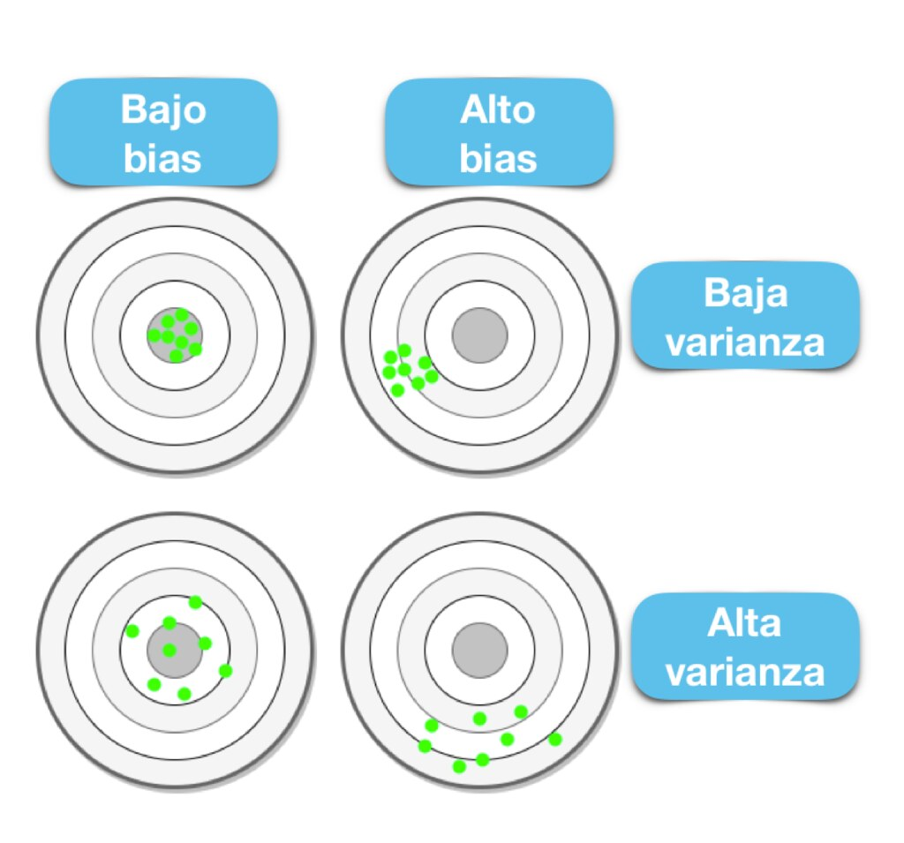

Capítulo 4 Introducción a Machine Learning
Como se había mencionado, el Machine Learning es una disciplina del campo de la Inteligencia Artificial que, a través de algoritmos, dota a los ordenadores de la capacidad de identificar patrones en datos para hacer predicciones. Este aprendizaje permite a los computadores realizar tareas específicas de forma autónoma.
El término se utilizó por primera vez en 1959. Sin embargo, ha ganado relevancia en los últimos años debido al aumento de la capacidad de computación y al BOOM de los datos.
Un algoritmo para computadoras puede ser pensado como una receta. Describe exactamente qué pasos se realizan uno tras otro. Los ordenadores no entienden las recetas de cocina, sino los lenguajes de programación: En ellos, el algoritmo se descompone en pasos formales (comandos) que el ordenador puede entender.

La cuestión no es solo saber para qué sirve el Machine Learning, sino que saber cómo funciona y cómo poder implementarlo en la industria para aprovecharse de sus beneficios. Hay ciertos pasos que usualmente se siguen para crear un modelo de Machine Learning. Estos son típicamente realizados por científicos de los datos que trabajan en estrecha colaboración con los profesionales de los negocios para los que se está desarrollando el modelo.
- Seleccionar y preparar un conjunto de datos de entrenamiento
Los datos de entrenamiento son un conjunto de datos representativos de los datos que el modelo de Machine Learning ingerirá para resolver el problema que está diseñado para resolver.
Los datos de entrenamiento deben prepararse adecuadamente: aleatorizados y comprobados en busca de desequilibrios o sesgos que puedan afectar al entrenamiento. También deben dividirse en dos subconjuntos: el subconjunto de entrenamiento, que se utilizará para entrenar el algoritmo, y el subconjunto de validación, que se utilizará para probarlo y perfeccionarlo.

- Elegir un algoritmo para ejecutarlo en el conjunto de datos de entrenamiento
Este es uno de los pasos más importantes, ya que se debe elegir qué algoritmo utilizar, siendo este un conjunto de pasos de procesamiento estadístico. El tipo de algoritmo depende del tipo (supervisado o no supervisado), la cantidad de datos del conjunto de datos de entrenamiento y del tipo de problema que se debe resolver.

- Entrenamiento del algoritmo para crear el modelo
El entrenamiento del algoritmo es un proceso iterativo: implica ejecutar las variables a través del algoritmo, comparar el resultado con los resultados que debería haber producido, ajustar los pesos y los sesgos dentro del algoritmo que podrían dar un resultado más exacto, y ejecutar las variables de nuevo hasta que el algoritmo devuelva el resultado correcto la mayoría de las veces. El algoritmo resultante, entrenado y preciso, es el modelo de Machine Learning.

- Usar y mejorar el modelo
El paso final es utilizar el modelo con nuevos datos y, en el mejor de los casos, para que mejore en precisión y eficacia con el tiempo. De dónde procedan los nuevos datos dependerá del problema que se resuelva. Por ejemplo, un modelo de Machine Learning diseñado para identificar el spam ingerirá mensajes de correo electrónico, mientras que un modelo de Machine Learning que maneja una aspiradora robot ingerirá datos que resulten de la interacción en el mundo real con muebles movidos o nuevos objetos en la habitación.

4.1 Análisis Supervisado vs No supervisado
Los algoritmos de Machine Learning se dividen en tres categorías, siendo las dos primeras las más comunes:

- Aprendizaje supervisado: estos algoritmos cuentan con un aprendizaje previo basado en un sistema de etiquetas asociadas a unos datos que les permiten tomar decisiones o hacer predicciones.
Algunos ejemplos son:
- Un detector de spam que etiqueta un e-mail como spam o no.
- Predecir precios de casas
- Clasificación de imagenes
- Predecir el clima
- ¿Quiénes son los clientes descontentos?- Aprendizaje no supervisado: en el aprendizaje supervisado, la idea principal es aprender bajo supervisión, donde la señal de supervisión se nombra como valor objetivo o etiqueta. En el aprendizaje no supervisado, carecemos de este tipo de etiqueta. Por lo tanto, necesitamos encontrar nuestro camino sin ninguna supervisión ni guía. Esto simplemente significa que necesitamos descubrir qué es qué por nosotros mismos.
Algunos ejemplos son:
- Encontrar segmentos de clientes.
- Reducir la complejidad de un problema
- Selección de variables
- Encontrar grupos
- Reducción de dimensionalidad- Aprendizaje por refuerzo: su objetivo es que un algoritmo aprenda a partir de la propia experiencia. Esto es, que sea capaz de tomar la mejor decisión ante diferentes situaciones de acuerdo a un proceso de prueba y error en el que se recompensan las decisiones correctas.
Algunos ejemplos son:
- Reconocimiento facial
- Diagnósticos médicos
- Clasificar secuencias de ADN4.1.1 Regresión vs clasificación
Existen dos tipos principales de aprendizaje supervisado, esto depende del tipo de la variable respuesta:

4.2 Sesgo vs varianza
En el mundo de Machine Learning cuando desarrollamos un modelo nos esforzamos para hacer que sea lo más preciso, ajustando los parámetros, pero la realidad es que no se puede construir un modelo 100% preciso ya que nunca pueden estar libres de errores.
Comprender cómo las diferentes fuentes de error generan sesgo y varianza nos ayudará a mejorar el proceso de ajuste de datos, lo que resulta en modelos más precisos, adicionalmente también evitará el error de sobre-ajuste y falta de ajuste.
4.2.1 Balance entre sesgo y varianza o Trade-off
El objetivo de cualquier algoritmo supervisado de Machine Learning es lograr un sesgo bajo, una baja varianza y a su vez el algoritmo debe lograr un buen rendimiento de predicción.

El sesgo frente a la varianza se refiere a la precisión frente a la consistencia de los modelos entrenados por su algoritmo. Podemos diagnosticarlos de la siguiente manera:

Los algoritmos de baja varianza (alto sesgo) tienden a ser menos complejos, con una estructura subyacente simple o rígida.

Los algoritmos de bajo sesgo (alta varianza) tienden a ser más complejos, con una estructura subyacente flexible.
No hay escapatoria a la relación entre el sesgo y la varianza en Machine Learning, aumentar el sesgo disminuirá la varianza, aumentar la varianza disminuirá el sesgo.
4.2.2 Error total
Comprender el sesgo y la varianza es fundamental para comprender el comportamiento de los modelos de predicción, pero en general lo que realmente importa es el error general, no la descomposición específica. El punto ideal para cualquier modelo es el nivel de complejidad en el que el aumento en el sesgo es equivalente a la reducción en la varianza.
Para construir un buen modelo, necesitamos encontrar un buen equilibrio entre el sesgo y la varianza de manera que minimice el error total.

4.2.3 Overfitting
El modelo es muy particular.
Error debido a la varianza
Durante el entrenamiento tiene un desempeño muy bueno, pero al pasar nuevos datos su desempeño es malo.
4.2.4 Underfitting
El modelo es demasiado general.
Error debido al sesgo.
Durante el entrenamiento no tiene un buen desempeño.

4.2.5 Error irreducible
El error irreducible no se puede reducir, independientemente de qué algoritmo se usa. También se le conoce como ruido y, por lo general, proviene por factores como variables desconocidas que influyen en el mapeo de las variables de entrada a la variable de salida, un conjunto de características incompleto o un problema mal enmarcado. Acá es importante comprender que no importa cuán bueno hagamos nuestro modelo, nuestros datos tendrán cierta cantidad de ruido o un error irreductible que no se puede eliminar.
4.3 Partición de datos

Cuando hay una gran cantidad de datos disponibles, una estrategia inteligente es asignar subconjuntos específicos de datos para diferentes tareas, en lugar de asignar la mayor cantidad posible solo a la estimación de los parámetros del modelo.
Si el conjunto inicial de datos no es lo suficientemente grande, habrá cierta superposición de cómo y cuándo se asignan nuestros datos, y es importante contar con una metodología sólida para la partición de datos.
4.3.1 Métodos comunes para particionar datos
El enfoque principal para la validación del modelo es dividir el conjunto de datos existente en dos conjuntos distintos:
Entrenamiento: Este conjunto suele contener la mayoría de los datos, los cuales sirven para la construcción de modelos donde se pueden ajustar diferentes modelos, se investigan estrategias de ingeniería de características, etc.
La mayor parte del proceso de modelado se utiliza este conjunto.
Prueba: La otra parte de las observaciones se coloca en este conjunto. Estos datos se mantienen en reserva hasta que se elijan uno o dos modelos como los de mejor rendimiento.
El conjunto de prueba se utiliza como árbitro final para determinar la eficiencia del modelo, por lo que es fundamental mirar el conjunto de prueba una sola vez.
Supongamos que asignamos el \(80\%\) de los datos al conjunto de entrenamiento y el \(20\%\) restante a las pruebas. El método más común es utilizar un muestreo aleatorio simple. En python existe un módulo de sklearn que permite hacer tal separación de datos:
import pandas as pd
from siuba import select, _
from plydata.one_table_verbs import pull
from sklearn.model_selection import train_test_split
ames = pd.read_csv("data/ames.csv")
y = ames >> pull("Sale_Price")
X = select(ames, -_.Sale_Price)
X_train, X_test, y_train, y_test = train_test_split(
X, y,
test_size = 0.20,
random_state = 12345
)
print("Tamaño de conjunto de entrenamiento: ", X_train.shape)## Tamaño de conjunto de entrenamiento: (2344, 73)print("Tamaño de conjunto de prueba: ", X_test.shape)## Tamaño de conjunto de prueba: (586, 73)El muestreo aleatorio simple es apropiado en muchos casos, pero hay excepciones.
Cuando hay un desbalance de clases en los problemas de clasificación, el uso de una muestra aleatoria simple puede asignar al azar estas muestras poco frecuentes de manera desproporcionada al conjunto de entrenamiento o prueba.
Para evitar esto, se puede utilizar un muestreo estratificado. La división de entrenamiento/prueba se lleva a cabo por separado dentro de cada clase y luego estas submuestras se combinan en el conjunto general de entrenamiento y prueba.
Para los problemas de regresión, los datos de los resultados se pueden agrupar artificialmente en cuartiles y luego realizar un muestreo estratificado cuatro veces por separado. Este es un método eficaz para mantener similares las distribuciones del resultado entre el conjunto de entrenamiento y prueba.

Observamos que la distribución del precio de venta está sesgada a la derecha. Las casas más caras no estarían bien representadas en el conjunto de entrenamiento con una simple partición; esto aumentaría el riesgo de que nuestro modelo sea ineficaz para predecir el precio de dichas propiedades.
Las líneas verticales punteadas indican los cuatro cuartiles para estos datos. Una muestra aleatoria estratificada llevaría a cabo la división 80/20 dentro de cada uno de estos subconjuntos de datos y luego combinaría los resultados. En sklearn, esto se logra usando el argumento de estratos:
import numpy as np
numeric_column = ames >> pull("Sale_Price")
quartiles = np.percentile(numeric_column, [25, 50, 75])
# Crea una nueva variable categórica basada en los cuartiles
stratify_variable = pd.cut(
numeric_column,
bins=[float('-inf'), quartiles[0], quartiles[1], quartiles[2], float('inf')],
labels=["Q1", "Q2", "Q3", "Q4"]
)
X_train, X_test, y_train, y_test = train_test_split(
X, y,
test_size = 0.20,
random_state = 12345,
stratify = stratify_variable
)
¿Qué proporción debería ser usada?
No hay un porcentaje de división óptimo para el conjunto de entrenamiento y prueba. Muy pocos datos en el conjunto de entrenamiento obstaculizan la capacidad del modelo para encontrar estimaciones de parámetros adecuadas y muy pocos datos en el conjunto de prueba reducen la calidad de las estimaciones de rendimiento.
Se debe elegir un porcentaje que cumpla con los objetivos de nuestro proyecto con consideraciones que incluyen:
- Costo computacional en el entrenamiento del modelo.
- Costo computacional en la evaluación del modelo.
- Representatividad del conjunto de formación.
- Representatividad del conjunto de pruebas.
Los porcentajes de división más comunes comunes son:
- Entrenamiento: \(80\%\), Prueba: \(20\%\)
- Entrenamiento: \(67\%\), Prueba: \(33\%\)
- Entrenamiento: \(50\%\), Prueba: \(50\%\)
4.3.2 Conjunto de validación
El conjunto de validación se definió originalmente cuando los investigadores se dieron cuenta de que medir el rendimiento del conjunto de entrenamiento conducía a resultados que eran demasiado optimistas.
Esto llevó a modelos que se sobre-ajustaban, lo que significa que se desempeñaron muy bien en el conjunto de entrenamiento pero mal en el conjunto de prueba.
Para combatir este problema, se retuvo un pequeño conjunto de datos de validación y se utilizó para medir el rendimiento del modelo mientras este está siendo entrenado. Una vez que la tasa de error del conjunto de validación comenzara a aumentar, la capacitación se detendría.
En otras palabras, el conjunto de validación es un medio para tener una idea aproximada de qué tan bien se desempeñó el modelo antes del conjunto de prueba.

Los conjuntos de validación se utilizan a menudo cuando el conjunto de datos original es muy grande. En este caso, una sola partición grande puede ser adecuada para caracterizar el rendimiento del modelo sin tener que realizar múltiples iteraciones de remuestreo.
Con sklearn, un conjunto de validación es como cualquier otro objeto de remuestreo; este tipo es diferente solo en que tiene una sola iteración

# Dividir los datos en entrenamiento (60%) y el resto (40%)
X_train, X_temp, y_train, y_temp = train_test_split(
X, y,
test_size = 0.4,
random_state = 12345
)
# Dividir el resto en conjuntos de prueba (15%) y validación (25%)
X_test, X_val, y_test, y_val = train_test_split(
X_temp, y_temp,
test_size = 0.625,
random_state = 42
)
# Training (60%), testing (15%), validation (25%)
# Imprimir los tamaños de los conjuntos resultantes
print("Tamaño de conjunto de entrenamiento: ", X_train.shape)## Tamaño de conjunto de entrenamiento: (1758, 73)print("Tamaño de conjunto de prueba: ", X_test.shape)## Tamaño de conjunto de prueba: (439, 73)print("Tamaño de conjunto de validación: ", X_val.shape)## Tamaño de conjunto de validación: (733, 73)Esta función regresa una columna para los objetos de división de datos y una columna llamada id que tiene una cadena de caracteres con el identificador de remuestreo.
El argumento de estratos hace que el muestreo aleatorio se lleve a cabo dentro de la variable de estratificación. Esto puede ayudar a garantizar que el número de datos en los datos del análisis sea equivalente a las proporciones del conjunto de datos original. (Los estratos inferiores al 10% del total se agrupan).
Otra opción de muestreo bastante común es la realizada mediante múltiples submuestras de los datos originales.

Diversos métodos se revisarán a lo largo del curso.
4.3.3 Leave-one-out cross-validation
La validación cruzada es una manera de predecir el ajuste de un modelo a un hipotético conjunto de datos de prueba cuando no disponemos del conjunto explícito de datos de prueba.
El método LOOCV en un método iterativo que se inicia empleando como conjunto de entrenamiento todas las observaciones disponibles excepto una, que se excluye para emplearla como validación.
Si se emplea una única observación para calcular el error, este varía mucho dependiendo de qué observación se haya seleccionado. Para evitarlo, el proceso se repite tantas veces como observaciones disponibles se tengan, excluyendo en cada iteración una observación distinta, ajustando el modelo con el resto y calculando el error con dicha observación.
Finalmente, el error estimado por el es el promedio de todos lo \(i\) errores calculados.
La principal desventaja de este método es su costo computacional. El proceso requiere que el modelo sea reajustado y validado tantas veces como observaciones disponibles se tengan lo que en algunos casos puede ser muy complicado.
sklearn contiene la función LeaveOneOut().
from sklearn.model_selection import LeaveOneOut, cross_val_score
from sklearn.linear_model import LinearRegression
y = ames >> pull("Sale_Price") ## Otra forma: ames["Sale_Price"]
X = select(ames, _.Gr_Liv_Area)
# Crea el regresor lineal que deseas evaluar
regressor = LinearRegression()
# Crea el objeto Leave-One-Out Cross-Validation
loo = LeaveOneOut()
# Realiza la validación cruzada LOOCV y obtén los scores de cada iteración
scores = cross_val_score(
regressor, X, y, cv = loo,
scoring='neg_mean_squared_error',
error_score = 'raise')
# Calcula el promedio y la desviación estándar de los scores
mean_score = -scores.mean()
std_score = scores.std()
# Imprime los resultados
print("Scores de cada iteración:", scores)## Scores de cada iteración: [-2.80608203e+08 -7.01304898e+07 -1.05533389e+08 ... -1.07632629e+08
## -2.45849621e+06 -2.37271777e+09]print("Promedio del score:", mean_score)## Promedio del score: 3206707385.6871295print("Desviación estándar del score:", std_score)## Desviación estándar del score: 9431124835.276964.3.4 K Fold Cross Validation
En la validación cruzada de K iteraciones (K Fold Cross Validation) los datos de muestra se dividen en K subconjuntos. Uno de los subconjuntos se utiliza como datos de prueba y el resto como datos de entrenamiento. El proceso de validación cruzada es repetido durante \(k\) iteraciones, con cada uno de los posibles subconjuntos de datos de prueba.
Finalmente se obtiene el promedio de los rendimientos de cada iteración para obtener un único resultado. Lo más común es utilizar la validación cruzada de 10 iteraciones.

Este método de validación cruzada se utiliza principalmente para:
Estimar el error cuando nuestro conjunto de prueba es muy pequeño. Es decir, se tiene la misma configuración de parámetros y solamente cambia el conjunto de prueba y validación.
Encontrar lo mejores hiperparámetros que ajusten mejor el modelo. Es decir, en cada bloque se tiene una configuración de hiperparámetros distinto y se seleccionará aquellos hiperparámetros que hayan producido el error más pequeño.

En python, esto se logra mediante las siguiente función:
from sklearn.model_selection import KFold
# Crea el objeto K-Fold Cross-Validation con K=5 (puedes cambiar el valor de K según tus necesidades)
kf = KFold(n_splits = 10, shuffle = True, random_state = 42)
# Realiza la validación cruzada KFCV y obtén los scores de cada iteración
scores = cross_val_score(
regressor, X, y, cv = kf,
scoring='neg_mean_squared_error'
)
# Calcula el promedio y la desviación estándar de los scores
mean_score = -scores.mean()
std_score = scores.std()
# Imprime los resultados
print("Scores de cada iteración:", scores)## Scores de cada iteración: [-3.94519600e+09 -3.61280406e+09 -2.60703956e+09 -3.56455494e+09
## -3.10455928e+09 -3.08042248e+09 -2.79329524e+09 -3.61684676e+09
## -3.00764032e+09 -2.75338281e+09]print("Promedio del score:", mean_score)## Promedio del score: 3208574145.632535print("Desviación estándar del score:", std_score)## Desviación estándar del score: 425269133.9629184Éste método nos permite detectar el nivel de error para diferentes conjuntos de entrenamiento y validación. El modelo es el mismo, pero existen pequeñas perturbaciones en los datos que ayudan a estimar el promedio y desviación estándar del nivel de precisión del modelo.
4.3.5 Validación cruzada para series de tiempo
En este procedimiento, hay una serie de conjuntos de prueba, cada uno de los cuales consta de una única observación. El conjunto de entrenamiento correspondiente consta solo de observaciones que ocurrieron antes de la observación que forma el conjunto de prueba. Por lo tanto, no se pueden utilizar observaciones futuras para construir el pronóstico.
El siguiente diagrama ilustra la serie de conjuntos de entrenamiento y prueba, donde las observaciones azules forman los conjuntos de entrenamiento y las observaciones rojas forman los conjuntos de prueba.

La precisión del pronóstico se calcula promediando los conjuntos de prueba. Este procedimiento a veces se conoce como “evaluación en un origen de pronóstico continuo” porque el “origen” en el que se basa el pronóstico avanza en el tiempo.
Con los pronósticos de series de tiempo, los pronósticos de un paso pueden no ser tan relevantes como los pronósticos de varios pasos. En este caso, el procedimiento de validación cruzada basado en un origen de pronóstico continuo se puede modificar para permitir el uso de errores de varios pasos.
Suponga que estamos interesados en modelos que producen buenos pronósticos de 4 pasos por delante. Entonces el diagrama correspondiente se muestra a continuación.

¡¡ I M P O R T A N T E !!
El modo de entrenar un modelo debe hacerse imitando la manera en que se realizarán las predicciones posteriormente. Es decir:
Si se pretenden hacer predicciones de eventos futuros (dentro de un mes), al momento de entrenar el modelo los datos deben corresponder al estatus en que se encontraban 1 mes antes de observar la variable de respuesta y la variable de respuesta debe ser el valor real que se deseaba predecir.
4.4 Pre-procesamiento de datos
Hay varios pasos que se deben de seguir para crear un modelo útil:
- Recopilación de datos.
- Limpieza de datos.
- Creación de nuevas variables.
- Estimación de parámetros.
- Selección y ajuste del modelo.
- Evaluación del rendimiento.
Al comienzo de un proyecto, generalmente hay un conjunto finito de datos disponibles para todas estas tareas.
OJO: A medida que los datos se reutilizan para múltiples tareas, aumentan los riesgos de agregar sesgos o grandes efectos de errores metodológicos.
Como punto de partida para nuestro flujo de trabajo de aprendizaje automático, necesitaremos datos de entrada. En la mayoría de los casos, estos datos se cargarán y almacenarán en forma de data frames o tibbles en R. Incluirán una o varias variables predictivas y, en caso de aprendizaje supervisado, también incluirán un resultado conocido.
Sin embargo, no todos los modelos pueden lidiar con diferentes problemas de datos y, a menudo, necesitamos transformar los datos para obtener el mejor rendimiento posible del modelo. Este proceso se denomina pre-procesamiento y puede incluir una amplia gama de pasos, como:
- Dicotomización de variables: Variables cualitativas que solo pueden tomar el valor \(0\) o \(1\) para indicar la ausencia o presencia de una condición específica. Estas variables se utilizan para clasificar los datos en categorías mutuamente excluyentes o para activar comandos de encendido / apagado


- Near Zero Value (nzv) o Varianza Cero: En algunas situaciones, el mecanismo de generación de datos puede crear predictores que solo tienen un valor único (es decir, un “predictor de varianza cercando a cero”). Para muchos modelos (excluidos los modelos basados en árboles), esto puede hacer que el modelo se bloquee o que el ajuste sea inestable.
De manera similar, los predictores pueden tener solo una pequeña cantidad de valores únicos que ocurren con frecuencias muy bajas.

- Imputaciones: Si faltan algunos predictores, ¿deberían estimarse mediante imputación?

- Des-correlacionar: Si hay predictores correlacionados, ¿debería mitigarse esta correlación? Esto podría significar filtrar predictores, usar análisis de componentes principales o una técnica basada en modelos (por ejemplo, regularización).

- Normalizar: ¿Deben centrarse y escalar los predictores?

- Transformar: ¿Es útil transformar los predictores para que sean más simétricos? (por ejemplo, escala logarítmica).
Dependiendo del caso de uso, algunos pasos de pre-procesamiento pueden ser indispensables para pasos posteriores, mientras que otros solo son opcionales. Sin embargo, dependiendo de los pasos de pre-procesamiento elegidos, el rendimiento del modelo puede cambiar significativamente en pasos posteriores. Por lo tanto, es muy común probar varias configuraciones.
4.5 Ingeniería de datos
La ingeniería de datos abarca actividades que dan formato a los valores de los predictores para que se puedan utilizar de manera eficaz para nuestro modelo. Esto incluye transformaciones y codificaciones de los datos para representar mejor sus características importantes.
Por ejemplo:
1.- Supongamos que un conjunto de datos tiene dos predictores que se pueden representar de manera más eficaz en nuestro modelo como una proporción, así, tendríamos un nuevo predictor a partir de la proporción de los dos predictores originales.
| X | Proporción (X) |
|---|---|
| 691 | 0.1836789 |
| 639 | 0.1698565 |
| 969 | 0.2575758 |
| 955 | 0.2538543 |
| 508 | 0.1350346 |
2.- Al elegir cómo codificar nuestros datos en el modelado, podríamos elegir una opción que creemos que está más asociada con el resultado. El formato original de los datos, por ejemplo numérico (edad) versus categórico (grupo).
| Edad | Grupo |
|---|---|
| 7 | Niños |
| 78 | Adultos mayores |
| 17 | Adolescentes |
| 25 | Adultos |
| 90 | Adultos mayores |
La ingeniería y el pre-procesamiento de datos también pueden implicar el cambio de formato requerido por el modelo. Algunos modelos utilizan métricas de distancia geométrica y, en consecuencia, los predictores numéricos deben centrarse y escalar para que estén todos en las mismas unidades. De lo contrario, los valores de distancia estarían sesgados por la escala de cada columna.